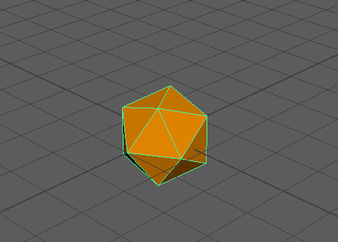

如果要使“移动”(Move)  、“旋转”(Rotate)
、“旋转”(Rotate)  或“缩放”(Scale)
或“缩放”(Scale)  工具操纵器变小或变大，可以使用加号 (+) 和减号 (-) 键来扩大和收缩。
工具操纵器变小或变大，可以使用加号 (+) 和减号 (-) 键来扩大和收缩。
、“旋转”(Rotate) 或“缩放”(Scale) 工具操纵器变小或变大，可以使用加号 (+) 和减号 (-) 键来扩大和收缩。

按加号 (+) 和减号 (-) 键来更改操纵器大小
注： 工具必须处于活动状态（移动、旋转、缩放）。
、“旋转”(Rotate) 或“缩放”(Scale) 工具操纵器变小或变大，可以使用加号 (+) 和减号 (-) 键来扩大和收缩。
按加号 (+) 和减号 (-) 键来更改操纵器大小